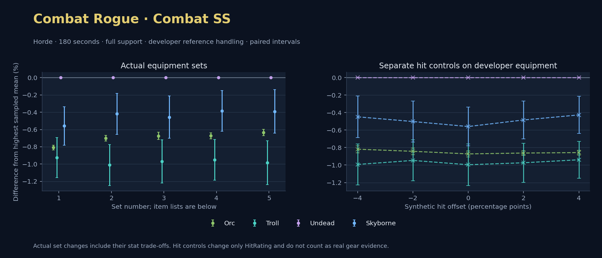

Horde · Orc / Troll / Undead / Skyborne

No pet or guardian appears in the reference combat metrics. Reference: Orc, developer equipment, 180 seconds and full support. Pet choices remain those of the developer build.
WoWSims developer · Slow Main Hand
Unimplemented enchant or active set effects: [{"id": 1676, "pieces": 3, "effects": ["Restores 15 health per 5 sec."]}, {"id": 1676, "pieces": 5, "effects": ["When struck in combat, has a 5% chance to remove a Snare effect from yourself. Can only occur once every 60 sec."]}]
Unmeasured proc rates: [{"source": "set", "id": 1676, "pieces": 4, "kind": "ppm", "origin": "unknown"}, {"source": "enchant", "id": 1900, "name": "Enchant Weapon - Crusader", "kind": "ppm", "origin": "vanilla"}, {"source": "item", "id": 871, "name": "Flurry Axe", "kind": "ppm", "origin": "vanilla"}]
180 seconds, full support and original developer references. Hit below is generic sheet melee / spell hit; school and talent bonuses can be attached directly to spells.
| Race | DPS | Gap and interval | Generic hit | Replay |
|---|---|---|---|---|
| Undead | 706.97 | +0.000% ± 0.000 | 14.4% / 14.4% | Native input · Website JSON |
| Skyborne | 703.02 | -0.559% ± 0.222 | 14.4% / 14.4% | Native input · Website JSON |
| Orc | 701.25 | -0.809% ± 0.027 | 14.4% / 14.4% | Native input · Website JSON |
| Troll | 700.43 | -0.925% ± 0.232 | 14.4% / 14.4% | Native input · Website JSON |
| Slot | Item | ID | Enchant |
|---|---|---|---|
| Head | Darkmantle Cap | 226829 | Lesser Arcane Amalgamation |
| Neck | Beads of Ogre Might | 22150 | |
| Shoulder | Darkspear Pauldrons | 272105 | |
| Back | Earthweave Cloak | 21187 | Enchant Cloak - Agility |
| Chest | Darkmantle Tunic | 226825 | Enchant Chest - Living Stats |
| Wrist | Darkmantle Bracers | 226830 | Enchant Bracer - Agility |
| Hands | Darkmantle Grips | 226828 | Enchant Gloves - Greater Agility |
| Waist | Assassin's Waistguard | 272395 | |
| Legs | Darkmantle Pants | 226827 | Lesser Arcane Amalgamation |
| Feet | Darkmantle Footpads | 226831 | Enchant Boots - Minor Speed |
| Ring 1 | Don Julio's Band | 19325 | |
| Ring 2 | Might of Cenarius | 21189 | |
| Trinket 1 | Adaptive Combat Assistant | 272437 | |
| Trinket 2 | Rune of the Guard Captain | 19120 | |
| Main hand | Persuader | 22384 | Enchant Weapon - Crusader |
| Off hand | Flurry Axe | 871 | Enchant Weapon - Agility |
| Ranged / relic | Fahrad's Reloading Repeater | 22347 |
Published ranked alternatives · Published pre-raid
Recorded source replacements: [{"slot": "head", "from": 11735, "to": 252482, "publishedAlternativeRank": 1, "publishedEpDelta": -4.2, "reason": "First published alternative compatible with the current WoWSims database, class, faction and occupied slots."}, {"slot": "back", "from": 13340, "to": 272414, "publishedAlternativeRank": 1, "publishedEpDelta": -15.3, "reason": "First published alternative compatible with the current WoWSims database, class, faction and occupied slots."}, {"slot": "finger2", "from": 9533, "to": 285190, "publishedAlternativeRank": 2, "publishedEpDelta": -2.6, "reason": "First published alternative compatible with the current WoWSims database, class, faction and occupied slots."}, {"slot": "offhand", "from": 15806, "to": 8190, "publishedAlternativeRank": 1, "publishedEpDelta": -15.7, "reason": "First published alternative compatible with the current WoWSims database, class, faction and occupied slots."}, {"slot": "ranged", "from": 2100, "to": 13023, "publishedAlternativeRank": 1, "publishedEpDelta": -3.6, "reason": "First published alternative compatible with the current WoWSims database, class, faction and occupied slots."}]
Unimplemented enchant or active set effects: [{"id": 143, "pieces": 2, "effects": ["Improves your chance to hit by 2.0%."]}]
Unmeasured proc rates: [{"source": "enchant", "id": 1900, "name": "Enchant Weapon - Crusader", "kind": "ppm", "origin": "vanilla"}, {"source": "item", "id": 8190, "name": "Hanzo Sword", "kind": "ppm", "origin": "vanilla"}, {"source": "enchant", "id": 1900, "name": "Enchant Weapon - Crusader", "kind": "ppm", "origin": "vanilla"}]
180 seconds, full support and original developer references. Hit below is generic sheet melee / spell hit; school and talent bonuses can be attached directly to spells.
| Race | DPS | Gap and interval | Generic hit | Replay |
|---|---|---|---|---|
| Undead | 641.96 | +0.000% ± 0.000 | 10.2% / 10.2% | Native input · Website JSON |
| Skyborne | 639.27 | -0.419% ± 0.238 | 10.2% / 10.2% | Native input · Website JSON |
| Orc | 637.45 | -0.702% ± 0.032 | 10.2% / 10.2% | Native input · Website JSON |
| Troll | 635.47 | -1.011% ± 0.238 | 10.2% / 10.2% | Native input · Website JSON |
| Slot | Item | ID | Enchant |
|---|---|---|---|
| Head | Blue Suede Hat | 252482 | Lesser Arcane Amalgamation |
| Neck | Skibi's Pendant | 13089 | Enchant Necklace - Agility |
| Shoulder | Shadowcraft Spaulders | 16708 | |
| Back | Howler's Furs | 272414 | Enchant Cloak - Agility |
| Chest | Dawn Armor | 252483 | Enchant Chest - Greater Stats |
| Wrist | Shadowcraft Bracers | 16710 | Enchant Bracer - Agility |
| Hands | Devilsaur Gauntlets | 15063 | Enchant Gloves - Greater Agility |
| Waist | Assassin's Waistguard | 272395 | |
| Legs | Devilsaur Leggings | 15062 | Lesser Arcane Amalgamation |
| Feet | Shadowcraft Boots | 16711 | Enchant Boots - Greater Agility |
| Ring 1 | Cutthroat's Signet | 272408 | |
| Ring 2 | Wyvern Heart Band | 285190 | |
| Trinket 1 | Adaptive Combat Assistant | 272437 | |
| Trinket 2 | Rune of the Guard Captain | 19120 | |
| Main hand | Persuader | 22384 | Enchant Weapon - Crusader |
| Off hand | Hanzo Sword | 8190 | Enchant Weapon - Crusader |
| Ranged / relic | Eaglehorn Long Bow | 13023 |
Published one-slot hit alternative · Published pre-raid
One source-listed alternative; at least 80% of the source slot score retained. Reported hit selects the contrast; only native stats determine simulation outcomes. This is an experimental combination, not an endorsed best set.
Recorded source replacements: [{"slot": "head", "from": 11735, "to": 252482, "publishedAlternativeRank": 1, "publishedEpDelta": -4.2, "reason": "First published alternative compatible with the current WoWSims database, class, faction and occupied slots."}, {"slot": "back", "from": 13340, "to": 272414, "publishedAlternativeRank": 1, "publishedEpDelta": -15.3, "reason": "First published alternative compatible with the current WoWSims database, class, faction and occupied slots."}, {"slot": "finger2", "from": 9533, "to": 285190, "publishedAlternativeRank": 2, "publishedEpDelta": -2.6, "reason": "First published alternative compatible with the current WoWSims database, class, faction and occupied slots."}, {"slot": "offhand", "from": 15806, "to": 8190, "publishedAlternativeRank": 1, "publishedEpDelta": -15.7, "reason": "First published alternative compatible with the current WoWSims database, class, faction and occupied slots."}, {"slot": "ranged", "from": 2100, "to": 13023, "publishedAlternativeRank": 1, "publishedEpDelta": -3.6, "reason": "First published alternative compatible with the current WoWSims database, class, faction and occupied slots."}]
Unimplemented enchant or active set effects: [{"id": 143, "pieces": 2, "effects": ["Improves your chance to hit by 2.0%."]}]
Unmeasured proc rates: [{"source": "enchant", "id": 1900, "name": "Enchant Weapon - Crusader", "kind": "ppm", "origin": "vanilla"}, {"source": "item", "id": 8190, "name": "Hanzo Sword", "kind": "ppm", "origin": "vanilla"}, {"source": "enchant", "id": 1900, "name": "Enchant Weapon - Crusader", "kind": "ppm", "origin": "vanilla"}]
180 seconds, full support and original developer references. Hit below is generic sheet melee / spell hit; school and talent bonuses can be attached directly to spells.
| Race | DPS | Gap and interval | Generic hit | Replay |
|---|---|---|---|---|
| Undead | 633.52 | +0.000% ± 0.000 | 8.2% / 8.2% | Native input · Website JSON |
| Skyborne | 630.63 | -0.457% ± 0.246 | 8.2% / 8.2% | Native input · Website JSON |
| Orc | 629.25 | -0.674% ± 0.041 | 8.2% / 8.2% | Native input · Website JSON |
| Troll | 627.37 | -0.970% ± 0.250 | 8.2% / 8.2% | Native input · Website JSON |
| Slot | Item | ID | Enchant |
|---|---|---|---|
| Head | Blue Suede Hat | 252482 | Lesser Arcane Amalgamation |
| Neck | Skibi's Pendant | 13089 | Enchant Necklace - Agility |
| Shoulder | Shadowcraft Spaulders | 16708 | |
| Back | Howler's Furs | 272414 | Enchant Cloak - Agility |
| Chest | Dawn Armor | 252483 | Enchant Chest - Greater Stats |
| Wrist | Shadowcraft Bracers | 16710 | Enchant Bracer - Agility |
| Hands | Devilsaur Gauntlets | 15063 | Enchant Gloves - Greater Agility |
| Waist | Might of the Timbermaw | 19044 | |
| Legs | Devilsaur Leggings | 15062 | Lesser Arcane Amalgamation |
| Feet | Shadowcraft Boots | 16711 | Enchant Boots - Greater Agility |
| Ring 1 | Cutthroat's Signet | 272408 | |
| Ring 2 | Wyvern Heart Band | 285190 | |
| Trinket 1 | Adaptive Combat Assistant | 272437 | |
| Trinket 2 | Rune of the Guard Captain | 19120 | |
| Main hand | Persuader | 22384 | Enchant Weapon - Crusader |
| Off hand | Hanzo Sword | 8190 | Enchant Weapon - Crusader |
| Ranged / relic | Eaglehorn Long Bow | 13023 |
Published ranked alternatives · Published pre-raid
Recorded source replacements: [{"slot": "head", "from": 11735, "to": 252482, "publishedAlternativeRank": 1, "publishedEpDelta": -4.2, "reason": "First published alternative compatible with the current WoWSims database, class, faction and occupied slots."}, {"slot": "back", "from": 13340, "to": 272414, "publishedAlternativeRank": 1, "publishedEpDelta": -15.3, "reason": "First published alternative compatible with the current WoWSims database, class, faction and occupied slots."}, {"slot": "waist", "from": 227805, "to": 272395, "publishedAlternativeRank": 1, "publishedEpDelta": -8.7, "reason": "First published alternative compatible with the current WoWSims database, class, faction and occupied slots."}, {"slot": "finger2", "from": 9533, "to": 285190, "publishedAlternativeRank": 2, "publishedEpDelta": -2.6, "reason": "First published alternative compatible with the current WoWSims database, class, faction and occupied slots."}, {"slot": "offhand", "from": 15806, "to": 8190, "publishedAlternativeRank": 1, "publishedEpDelta": -15.7, "reason": "First published alternative compatible with the current WoWSims database, class, faction and occupied slots."}, {"slot": "ranged", "from": 2100, "to": 13023, "publishedAlternativeRank": 1, "publishedEpDelta": -3.6, "reason": "First published alternative compatible with the current WoWSims database, class, faction and occupied slots."}]
Unimplemented enchant or active set effects: [{"id": 143, "pieces": 2, "effects": ["Improves your chance to hit by 2.0%."]}]
Unmeasured proc rates: [{"source": "enchant", "id": 1900, "name": "Enchant Weapon - Crusader", "kind": "ppm", "origin": "vanilla"}, {"source": "item", "id": 8190, "name": "Hanzo Sword", "kind": "ppm", "origin": "vanilla"}, {"source": "enchant", "id": 1900, "name": "Enchant Weapon - Crusader", "kind": "ppm", "origin": "vanilla"}]
180 seconds, full support and original developer references. Hit below is generic sheet melee / spell hit; school and talent bonuses can be attached directly to spells.
| Race | DPS | Gap and interval | Generic hit | Replay |
|---|---|---|---|---|
| Undead | 640.22 | +0.000% ± 0.000 | 9.5% / 9.5% | Native input · Website JSON |
| Skyborne | 637.75 | -0.386% ± 0.236 | 9.5% / 9.5% | Native input · Website JSON |
| Orc | 635.91 | -0.673% ± 0.034 | 9.5% / 9.5% | Native input · Website JSON |
| Troll | 634.13 | -0.951% ± 0.237 | 9.5% / 9.5% | Native input · Website JSON |
| Slot | Item | ID | Enchant |
|---|---|---|---|
| Head | Blue Suede Hat | 252482 | Lesser Arcane Amalgamation |
| Neck | Skibi's Pendant | 13089 | Enchant Necklace - Agility |
| Shoulder | Shadowcraft Spaulders | 16708 | |
| Back | Howler's Furs | 272414 | Enchant Cloak - Agility |
| Chest | Dawn Armor | 252483 | Enchant Chest - Greater Stats |
| Wrist | Shadowcraft Bracers | 16710 | Enchant Bracer - Agility |
| Hands | Devilsaur Gauntlets | 15063 | Enchant Gloves - Greater Agility |
| Waist | Assassin's Waistguard | 272395 | |
| Legs | Devilsaur Leggings | 15062 | Lesser Arcane Amalgamation |
| Feet | Shadowcraft Boots | 16711 | Enchant Boots - Greater Agility |
| Ring 1 | Cutthroat's Signet | 272408 | |
| Ring 2 | Wyvern Heart Band | 285190 | |
| Trinket 1 | Adaptive Combat Assistant | 272437 | |
| Trinket 2 | Molten Heart of the Mountain | 249470 | |
| Main hand | Persuader | 22384 | Enchant Weapon - Crusader |
| Off hand | Hanzo Sword | 8190 | Enchant Weapon - Crusader |
| Ranged / relic | Eaglehorn Long Bow | 13023 |
Published one-slot hit alternative · Published pre-raid
One source-listed alternative; at least 80% of the source slot score retained. Reported hit selects the contrast; only native stats determine simulation outcomes. This is an experimental combination, not an endorsed best set.
Recorded source replacements: [{"slot": "head", "from": 11735, "to": 252482, "publishedAlternativeRank": 1, "publishedEpDelta": -4.2, "reason": "First published alternative compatible with the current WoWSims database, class, faction and occupied slots."}, {"slot": "back", "from": 13340, "to": 272414, "publishedAlternativeRank": 1, "publishedEpDelta": -15.3, "reason": "First published alternative compatible with the current WoWSims database, class, faction and occupied slots."}, {"slot": "waist", "from": 227805, "to": 272395, "publishedAlternativeRank": 1, "publishedEpDelta": -8.7, "reason": "First published alternative compatible with the current WoWSims database, class, faction and occupied slots."}, {"slot": "finger2", "from": 9533, "to": 285190, "publishedAlternativeRank": 2, "publishedEpDelta": -2.6, "reason": "First published alternative compatible with the current WoWSims database, class, faction and occupied slots."}, {"slot": "offhand", "from": 15806, "to": 8190, "publishedAlternativeRank": 1, "publishedEpDelta": -15.7, "reason": "First published alternative compatible with the current WoWSims database, class, faction and occupied slots."}, {"slot": "ranged", "from": 2100, "to": 13023, "publishedAlternativeRank": 1, "publishedEpDelta": -3.6, "reason": "First published alternative compatible with the current WoWSims database, class, faction and occupied slots."}]
Unimplemented enchant or active set effects: [{"id": 143, "pieces": 2, "effects": ["Improves your chance to hit by 2.0%."]}]
Unmeasured proc rates: [{"source": "enchant", "id": 1900, "name": "Enchant Weapon - Crusader", "kind": "ppm", "origin": "vanilla"}, {"source": "item", "id": 8190, "name": "Hanzo Sword", "kind": "ppm", "origin": "vanilla"}, {"source": "enchant", "id": 1900, "name": "Enchant Weapon - Crusader", "kind": "ppm", "origin": "vanilla"}]
180 seconds, full support and original developer references. Hit below is generic sheet melee / spell hit; school and talent bonuses can be attached directly to spells.
| Race | DPS | Gap and interval | Generic hit | Replay |
|---|---|---|---|---|
| Undead | 630.83 | +0.000% ± 0.000 | 7.5% / 7.5% | Native input · Website JSON |
| Skyborne | 628.37 | -0.391% ± 0.253 | 7.5% / 7.5% | Native input · Website JSON |
| Orc | 626.84 | -0.634% ± 0.036 | 7.5% / 7.5% | Native input · Website JSON |
| Troll | 624.63 | -0.984% ± 0.255 | 7.5% / 7.5% | Native input · Website JSON |
| Slot | Item | ID | Enchant |
|---|---|---|---|
| Head | Blue Suede Hat | 252482 | Lesser Arcane Amalgamation |
| Neck | Skibi's Pendant | 13089 | Enchant Necklace - Agility |
| Shoulder | Shadowcraft Spaulders | 16708 | |
| Back | Howler's Furs | 272414 | Enchant Cloak - Agility |
| Chest | Dawn Armor | 252483 | Enchant Chest - Greater Stats |
| Wrist | Shadowcraft Bracers | 16710 | Enchant Bracer - Agility |
| Hands | Devilsaur Gauntlets | 15063 | Enchant Gloves - Greater Agility |
| Waist | Might of the Timbermaw | 19044 | |
| Legs | Devilsaur Leggings | 15062 | Lesser Arcane Amalgamation |
| Feet | Shadowcraft Boots | 16711 | Enchant Boots - Greater Agility |
| Ring 1 | Cutthroat's Signet | 272408 | |
| Ring 2 | Wyvern Heart Band | 285190 | |
| Trinket 1 | Adaptive Combat Assistant | 272437 | |
| Trinket 2 | Molten Heart of the Mountain | 249470 | |
| Main hand | Persuader | 22384 | Enchant Weapon - Crusader |
| Off hand | Hanzo Sword | 8190 | Enchant Weapon - Crusader |
| Ranged / relic | Eaglehorn Long Bow | 13023 |
The same declared pool is available to every race. Each race keeps its best validation-sample set with its screening-selected racial policy. Separate samples confirm that choice, with fresh precision samples near the practical-loss boundary. Gaps use the highest sampled mean under that same duration, support and reference treatment as their reference. A zero reference gap does not certify a race; the main matrix also allows uncertainty in the leader.
| Pool | Seconds | Support | References | Race | DPS | Gap and interval | Racial policies / mana | Selected set | Generic hit: melee / spell | Replay |
|---|---|---|---|---|---|---|---|---|---|---|
| published-pre-raid | 60 | full | developer | Troll | 742.88 | +0.000% ± 0.00020,000 iterations | developer / developer / developerMana waits 0.0s | published-rogue-combat-horde-ad1538d7c056cea3 | 9.5% / 9.5% | Input · Result · Stats |
| published-pre-raid | 60 | full | developer | Orc | 742.41 | -0.064% ± 0.08320,000 iterations | developer / developer / developerMana waits 0.0s | published-rogue-combat-horde-ad1538d7c056cea3 | 9.5% / 9.5% | Input · Result · Stats |
| published-pre-raid | 60 | full | developer | Undead | 742.28 | -0.082% ± 0.08320,000 iterations | developer / developer / developerMana waits 0.0s | published-rogue-combat-horde-ad1538d7c056cea3 | 9.5% / 9.5% | Input · Result · Stats |
| published-pre-raid | 60 | full | developer | Skyborne | 740.12 | -0.372% ± 0.07920,000 iterations | developer / developer / developerMana waits 0.0s | published-rogue-combat-horde-ad1538d7c056cea3 | 9.5% / 9.5% | Input · Result · Stats |
| published-pre-raid | 60 | full | explicit | Troll | 717.05 | +0.000% ± 0.00020,000 iterations | oncd / developer / developerMana waits 0.0s | published-rogue-combat-horde-ad1538d7c056cea3 | 9.5% / 9.5% | Input · Result · Stats |
| published-pre-raid | 60 | full | explicit | Undead | 716.52 | -0.074% ± 0.09120,000 iterations | developer / developer / developerMana waits 0.0s | published-rogue-combat-horde-ad1538d7c056cea3 | 9.5% / 9.5% | Input · Result · Stats |
| published-pre-raid | 60 | full | explicit | Skyborne | 714.32 | -0.380% ± 0.08720,000 iterations | developer / developer / developerMana waits 0.0s | published-rogue-combat-horde-ad1538d7c056cea3 | 9.5% / 9.5% | Input · Result · Stats |
| published-pre-raid | 60 | full | explicit | Orc | 645.03 | -10.043% ± 0.10120,000 iterations | oncd / developer / developerMana waits 0.0s | published-rogue-combat-horde-ad1538d7c056cea3 | 9.5% / 9.5% | Input · Result · Stats |
| published-pre-raid | 60 | self | developer | Undead | 383.72 | +0.000% ± 0.0005,000 iterations | developer / developer / developerMana waits 0.0s | published-rogue-combat-horde-ad1538d7c056cea3 | 9.5% / 9.5% | Input · Result · Stats |
| published-pre-raid | 60 | self | developer | Troll | 380.52 | -0.834% ± 0.1585,000 iterations | oncd / developer / developerMana waits 0.0s | published-rogue-combat-horde-ad1538d7c056cea3 | 9.5% / 9.5% | Input · Result · Stats |
| published-pre-raid | 60 | self | developer | Orc | 379.32 | -1.147% ± 0.0285,000 iterations | developer / developer / developerMana waits 0.0s | published-rogue-combat-horde-ad1538d7c056cea3 | 9.5% / 9.5% | Input · Result · Stats |
| published-pre-raid | 60 | self | developer | Skyborne | 378.96 | -1.242% ± 0.1395,000 iterations | developer / developer / developerMana waits 0.0s | published-rogue-combat-horde-ad1538d7c056cea3 | 9.5% / 9.5% | Input · Result · Stats |
| published-pre-raid | 60 | self | explicit | Undead | 366.18 | +0.000% ± 0.0005,000 iterations | developer / developer / developerMana waits 0.0s | published-rogue-combat-horde-ad1538d7c056cea3 | 9.5% / 9.5% | Input · Result · Stats |
| published-pre-raid | 60 | self | explicit | Troll | 362.93 | -0.888% ± 0.1695,000 iterations | oncd / developer / developerMana waits 0.0s | published-rogue-combat-horde-ad1538d7c056cea3 | 9.5% / 9.5% | Input · Result · Stats |
| published-pre-raid | 60 | self | explicit | Skyborne | 361.40 | -1.305% ± 0.1475,000 iterations | developer / developer / developerMana waits 0.0s | published-rogue-combat-horde-ad1538d7c056cea3 | 9.5% / 9.5% | Input · Result · Stats |
| published-pre-raid | 60 | self | explicit | Orc | 320.91 | -12.362% ± 0.1915,000 iterations | oncd / developer / developerMana waits 0.0s | published-rogue-combat-horde-ad1538d7c056cea3 | 9.5% / 9.5% | Input · Result · Stats |
| published-pre-raid | 180 | full | developer | Undead | 640.78 | +0.000% ± 0.0005,000 iterations | developer / developer / developerMana waits 0.0s | published-rogue-combat-horde-52d8fc38012c14ad | 10.2% / 10.2% | Input · Result · Stats · Website JSON |
| published-pre-raid | 180 | full | developer | Skyborne | 637.91 | -0.448% ± 0.1075,000 iterations | developer / developer / developerMana waits 0.0s | published-rogue-combat-horde-52d8fc38012c14ad | 10.2% / 10.2% | Input · Result · Stats · Website JSON |
| published-pre-raid | 180 | full | developer | Orc | 636.26 | -0.706% ± 0.0155,000 iterations | developer / developer / developerMana waits 0.0s | published-rogue-combat-horde-52d8fc38012c14ad | 10.2% / 10.2% | Input · Result · Stats · Website JSON |
| published-pre-raid | 180 | full | developer | Troll | 634.50 | -0.981% ± 0.1095,000 iterations | oncd / developer / developerMana waits 0.0s | published-rogue-combat-horde-52d8fc38012c14ad | 10.2% / 10.2% | Input · Result · Stats · Website JSON |
| published-pre-raid | 180 | full | explicit | Undead | 628.98 | +0.000% ± 0.0005,000 iterations | developer / developer / developerMana waits 0.0s | published-rogue-combat-horde-52d8fc38012c14ad | 10.2% / 10.2% | Input · Result · Stats |
| published-pre-raid | 180 | full | explicit | Skyborne | 626.33 | -0.421% ± 0.1085,000 iterations | developer / developer / developerMana waits 0.0s | published-rogue-combat-horde-52d8fc38012c14ad | 10.2% / 10.2% | Input · Result · Stats |
| published-pre-raid | 180 | full | explicit | Troll | 623.32 | -0.899% ± 0.1095,000 iterations | developer / developer / developerMana waits 0.0s | published-rogue-combat-horde-52d8fc38012c14ad | 10.2% / 10.2% | Input · Result · Stats |
| published-pre-raid | 180 | full | explicit | Orc | 601.77 | -4.325% ± 0.1185,000 iterations | oncd / developer / developerMana waits 0.0s | published-rogue-combat-horde-52d8fc38012c14ad | 10.2% / 10.2% | Input · Result · Stats |
| published-pre-raid | 180 | self | developer | Undead | 322.23 | +0.000% ± 0.0005,000 iterations | developer / developer / developerMana waits 0.0s | published-rogue-combat-horde-52d8fc38012c14ad | 10.2% / 10.2% | Input · Result · Stats |
| published-pre-raid | 180 | self | developer | Skyborne | 317.43 | -1.488% ± 0.0985,000 iterations | developer / developer / developerMana waits 0.0s | published-rogue-combat-horde-52d8fc38012c14ad | 10.2% / 10.2% | Input · Result · Stats |
| published-pre-raid | 180 | self | developer | Orc | 316.24 | -1.859% ± 0.0215,000 iterations | developer / developer / developerMana waits 0.0s | published-rogue-combat-horde-52d8fc38012c14ad | 10.2% / 10.2% | Input · Result · Stats |
| published-pre-raid | 180 | self | developer | Troll | 316.03 | -1.922% ± 0.1035,000 iterations | oncd / developer / developerMana waits 0.0s | published-rogue-combat-horde-52d8fc38012c14ad | 10.2% / 10.2% | Input · Result · Stats |
| published-pre-raid | 180 | self | explicit | Undead | 314.55 | +0.000% ± 0.0005,000 iterations | developer / developer / developerMana waits 0.0s | published-rogue-combat-horde-52d8fc38012c14ad | 10.2% / 10.2% | Input · Result · Stats |
| published-pre-raid | 180 | self | explicit | Skyborne | 309.66 | -1.554% ± 0.0995,000 iterations | developer / developer / developerMana waits 0.0s | published-rogue-combat-horde-52d8fc38012c14ad | 10.2% / 10.2% | Input · Result · Stats |
| published-pre-raid | 180 | self | explicit | Troll | 308.37 | -1.964% ± 0.1015,000 iterations | developer / developer / developerMana waits 0.0s | published-rogue-combat-horde-52d8fc38012c14ad | 10.2% / 10.2% | Input · Result · Stats |
| published-pre-raid | 180 | self | explicit | Orc | 296.66 | -5.689% ± 0.1125,000 iterations | oncd / developer / developerMana waits 0.0s | published-rogue-combat-horde-52d8fc38012c14ad | 10.2% / 10.2% | Input · Result · Stats |
| published-pre-raid | 300 | full | developer | Undead | 623.39 | +0.000% ± 0.0005,000 iterations | developer / developer / developerMana waits 0.0s | published-rogue-combat-horde-52d8fc38012c14ad | 10.2% / 10.2% | Input · Result · Stats |
| published-pre-raid | 300 | full | developer | Skyborne | 619.76 | -0.581% ± 0.0875,000 iterations | developer / developer / developerMana waits 0.0s | published-rogue-combat-horde-52d8fc38012c14ad | 10.2% / 10.2% | Input · Result · Stats |
| published-pre-raid | 300 | full | developer | Orc | 617.83 | -0.891% ± 0.0195,000 iterations | oncd / developer / developerMana waits 0.0s | published-rogue-combat-horde-52d8fc38012c14ad | 10.2% / 10.2% | Input · Result · Stats |
| published-pre-raid | 300 | full | developer | Troll | 617.67 | -0.917% ± 0.0885,000 iterations | oncd / developer / developerMana waits 0.0s | published-rogue-combat-horde-52d8fc38012c14ad | 10.2% / 10.2% | Input · Result · Stats |
| published-pre-raid | 300 | full | explicit | Undead | 611.63 | +0.000% ± 0.0005,000 iterations | developer / developer / developerMana waits 0.0s | published-rogue-combat-horde-52d8fc38012c14ad | 10.2% / 10.2% | Input · Result · Stats |
| published-pre-raid | 300 | full | explicit | Skyborne | 608.31 | -0.543% ± 0.0865,000 iterations | developer / developer / developerMana waits 0.0s | published-rogue-combat-horde-52d8fc38012c14ad | 10.2% / 10.2% | Input · Result · Stats |
| published-pre-raid | 300 | full | explicit | Troll | 606.44 | -0.849% ± 0.0885,000 iterations | oncd / developer / developerMana waits 0.0s | published-rogue-combat-horde-52d8fc38012c14ad | 10.2% / 10.2% | Input · Result · Stats |
| published-pre-raid | 300 | full | explicit | Orc | 592.80 | -3.080% ± 0.0925,000 iterations | oncd / developer / developerMana waits 0.0s | published-rogue-combat-horde-52d8fc38012c14ad | 10.2% / 10.2% | Input · Result · Stats |
| published-pre-raid | 300 | self | developer | Undead | 312.17 | +0.000% ± 0.0005,000 iterations | developer / developer / developerMana waits 0.0s | published-rogue-combat-horde-52d8fc38012c14ad | 10.2% / 10.2% | Input · Result · Stats |
| published-pre-raid | 300 | self | developer | Skyborne | 307.06 | -1.640% ± 0.0795,000 iterations | developer / developer / developerMana waits 0.0s | published-rogue-combat-horde-52d8fc38012c14ad | 10.2% / 10.2% | Input · Result · Stats |
| published-pre-raid | 300 | self | developer | Troll | 306.24 | -1.901% ± 0.0815,000 iterations | oncd / developer / developerMana waits 0.0s | published-rogue-combat-horde-52d8fc38012c14ad | 10.2% / 10.2% | Input · Result · Stats |
| published-pre-raid | 300 | self | developer | Orc | 305.81 | -2.038% ± 0.0215,000 iterations | oncd / developer / developerMana waits 0.0s | published-rogue-combat-horde-52d8fc38012c14ad | 10.2% / 10.2% | Input · Result · Stats |
| published-pre-raid | 300 | self | explicit | Undead | 304.44 | +0.000% ± 0.0005,000 iterations | developer / developer / developerMana waits 0.0s | published-rogue-combat-horde-52d8fc38012c14ad | 10.2% / 10.2% | Input · Result · Stats |
| published-pre-raid | 300 | self | explicit | Skyborne | 299.27 | -1.700% ± 0.0805,000 iterations | developer / developer / developerMana waits 0.0s | published-rogue-combat-horde-52d8fc38012c14ad | 10.2% / 10.2% | Input · Result · Stats |
| published-pre-raid | 300 | self | explicit | Troll | 298.45 | -1.967% ± 0.0815,000 iterations | developer / developer / developerMana waits 0.0s | published-rogue-combat-horde-52d8fc38012c14ad | 10.2% / 10.2% | Input · Result · Stats |
| published-pre-raid | 300 | self | explicit | Orc | 291.17 | -4.359% ± 0.0895,000 iterations | oncd / developer / developerMana waits 0.0s | published-rogue-combat-horde-52d8fc38012c14ad | 10.2% / 10.2% | Input · Result · Stats |
| developer-reference | 60 | full | developer | Troll | 809.71 | +0.000% ± 0.00020,000 iterations | developer / developer / developerMana waits 0.0s | developer | 14.4% / 14.4% | Input · Result · Stats |
| developer-reference | 60 | full | developer | Undead | 809.63 | -0.011% ± 0.08020,000 iterations | developer / developer / developerMana waits 0.0s | developer | 14.4% / 14.4% | Input · Result · Stats |
| developer-reference | 60 | full | developer | Orc | 808.26 | -0.180% ± 0.08020,000 iterations | developer / developer / developerMana waits 0.0s | developer | 14.4% / 14.4% | Input · Result · Stats |
| developer-reference | 60 | full | developer | Skyborne | 807.20 | -0.310% ± 0.07720,000 iterations | developer / developer / developerMana waits 0.0s | developer | 14.4% / 14.4% | Input · Result · Stats |
| developer-reference | 60 | full | explicit | Undead | 783.09 | +0.000% ± 0.00020,000 iterations | developer / developer / developerMana waits 0.0s | developer | 14.4% / 14.4% | Input · Result · Stats |
| developer-reference | 60 | full | explicit | Troll | 782.90 | -0.025% ± 0.08520,000 iterations | oncd / developer / developerMana waits 0.0s | developer | 14.4% / 14.4% | Input · Result · Stats |
| developer-reference | 60 | full | explicit | Skyborne | 780.52 | -0.328% ± 0.07620,000 iterations | developer / developer / developerMana waits 0.0s | developer | 14.4% / 14.4% | Input · Result · Stats |
| developer-reference | 60 | full | explicit | Orc | 710.16 | -9.313% ± 0.09220,000 iterations | oncd / developer / developerMana waits 0.0s | developer | 14.4% / 14.4% | Input · Result · Stats |
| developer-reference | 60 | self | developer | Undead | 412.17 | +0.000% ± 0.0005,000 iterations | developer / developer / developerMana waits 0.0s | developer | 14.4% / 14.4% | Input · Result · Stats |
| developer-reference | 60 | self | developer | Troll | 407.52 | -1.128% ± 0.1515,000 iterations | oncd / developer / developerMana waits 0.0s | developer | 14.4% / 14.4% | Input · Result · Stats |
| developer-reference | 60 | self | developer | Skyborne | 406.45 | -1.389% ± 0.1305,000 iterations | developer / developer / developerMana waits 0.0s | developer | 14.4% / 14.4% | Input · Result · Stats |
| developer-reference | 60 | self | developer | Orc | 405.74 | -1.562% ± 0.0215,000 iterations | developer / developer / developerMana waits 0.0s | developer | 14.4% / 14.4% | Input · Result · Stats |
| developer-reference | 60 | self | explicit | Undead | 394.61 | +0.000% ± 0.0005,000 iterations | developer / developer / developerMana waits 0.0s | developer | 14.4% / 14.4% | Input · Result · Stats |
| developer-reference | 60 | self | explicit | Troll | 389.40 | -1.319% ± 0.1595,000 iterations | oncd / developer / developerMana waits 0.0s | developer | 14.4% / 14.4% | Input · Result · Stats |
| developer-reference | 60 | self | explicit | Skyborne | 388.57 | -1.529% ± 0.1385,000 iterations | developer / developer / developerMana waits 0.0s | developer | 14.4% / 14.4% | Input · Result · Stats |
| developer-reference | 60 | self | explicit | Orc | 349.25 | -11.493% ± 0.1755,000 iterations | oncd / developer / developerMana waits 0.0s | developer | 14.4% / 14.4% | Input · Result · Stats |
| developer-reference | 180 | full | developer | Undead | 706.33 | +0.000% ± 0.0005,000 iterations | developer / developer / developerMana waits 0.0s | developer | 14.4% / 14.4% | Input · Result · Stats · Website JSON |
| developer-reference | 180 | full | developer | Skyborne | 702.77 | -0.504% ± 0.0975,000 iterations | developer / developer / developerMana waits 0.0s | developer | 14.4% / 14.4% | Input · Result · Stats · Website JSON |
| developer-reference | 180 | full | developer | Orc | 700.60 | -0.811% ± 0.0135,000 iterations | developer / developer / developerMana waits 0.0s | developer | 14.4% / 14.4% | Input · Result · Stats · Website JSON |
| developer-reference | 180 | full | developer | Troll | 699.51 | -0.966% ± 0.1025,000 iterations | developer / developer / developerMana waits 0.0s | developer | 14.4% / 14.4% | Input · Result · Stats · Website JSON |
| developer-reference | 180 | full | explicit | Undead | 694.40 | +0.000% ± 0.0005,000 iterations | developer / developer / developerMana waits 0.0s | developer | 14.4% / 14.4% | Input · Result · Stats |
| developer-reference | 180 | full | explicit | Skyborne | 690.46 | -0.567% ± 0.1005,000 iterations | developer / developer / developerMana waits 0.0s | developer | 14.4% / 14.4% | Input · Result · Stats |
| developer-reference | 180 | full | explicit | Troll | 686.83 | -1.090% ± 0.1025,000 iterations | developer / developer / developerMana waits 0.0s | developer | 14.4% / 14.4% | Input · Result · Stats |
| developer-reference | 180 | full | explicit | Orc | 665.77 | -4.123% ± 0.1085,000 iterations | oncd / developer / developerMana waits 0.0s | developer | 14.4% / 14.4% | Input · Result · Stats |
| developer-reference | 180 | self | developer | Undead | 351.15 | +0.000% ± 0.0005,000 iterations | developer / developer / developerMana waits 0.0s | developer | 14.4% / 14.4% | Input · Result · Stats |
| developer-reference | 180 | self | developer | Skyborne | 345.22 | -1.689% ± 0.0945,000 iterations | developer / developer / developerMana waits 0.0s | developer | 14.4% / 14.4% | Input · Result · Stats |
| developer-reference | 180 | self | developer | Troll | 343.88 | -2.072% ± 0.0945,000 iterations | developer / developer / developerMana waits 0.0s | developer | 14.4% / 14.4% | Input · Result · Stats |
| developer-reference | 180 | self | developer | Orc | 343.57 | -2.158% ± 0.0155,000 iterations | developer / developer / developerMana waits 0.0s | developer | 14.4% / 14.4% | Input · Result · Stats |
| developer-reference | 180 | self | explicit | Undead | 343.29 | +0.000% ± 0.0005,000 iterations | developer / developer / developerMana waits 0.0s | developer | 14.4% / 14.4% | Input · Result · Stats |
| developer-reference | 180 | self | explicit | Skyborne | 337.15 | -1.787% ± 0.0955,000 iterations | developer / developer / developerMana waits 0.0s | developer | 14.4% / 14.4% | Input · Result · Stats |
| developer-reference | 180 | self | explicit | Troll | 335.31 | -2.323% ± 0.0985,000 iterations | oncd / developer / developerMana waits 0.0s | developer | 14.4% / 14.4% | Input · Result · Stats |
| developer-reference | 180 | self | explicit | Orc | 323.96 | -5.629% ± 0.1035,000 iterations | oncd / developer / developerMana waits 0.0s | developer | 14.4% / 14.4% | Input · Result · Stats |
| developer-reference | 300 | full | developer | Undead | 688.63 | +0.000% ± 0.0005,000 iterations | developer / developer / developerMana waits 0.0s | developer | 14.4% / 14.4% | Input · Result · Stats |
| developer-reference | 300 | full | developer | Skyborne | 684.25 | -0.637% ± 0.0805,000 iterations | developer / developer / developerMana waits 0.0s | developer | 14.4% / 14.4% | Input · Result · Stats |
| developer-reference | 300 | full | developer | Orc | 681.89 | -0.980% ± 0.0195,000 iterations | oncd / developer / developerMana waits 0.0s | developer | 14.4% / 14.4% | Input · Result · Stats |
| developer-reference | 300 | full | developer | Troll | 681.87 | -0.982% ± 0.0835,000 iterations | developer / developer / developerMana waits 0.0s | developer | 14.4% / 14.4% | Input · Result · Stats |
| developer-reference | 300 | full | explicit | Undead | 676.67 | +0.000% ± 0.0005,000 iterations | developer / developer / developerMana waits 0.0s | developer | 14.4% / 14.4% | Input · Result · Stats |
| developer-reference | 300 | full | explicit | Skyborne | 672.07 | -0.680% ± 0.0815,000 iterations | developer / developer / developerMana waits 0.0s | developer | 14.4% / 14.4% | Input · Result · Stats |
| developer-reference | 300 | full | explicit | Troll | 669.66 | -1.036% ± 0.0835,000 iterations | developer / developer / developerMana waits 0.0s | developer | 14.4% / 14.4% | Input · Result · Stats |
| developer-reference | 300 | full | explicit | Orc | 656.33 | -3.006% ± 0.0855,000 iterations | oncd / developer / developerMana waits 0.0s | developer | 14.4% / 14.4% | Input · Result · Stats |
| developer-reference | 300 | self | developer | Undead | 341.05 | +0.000% ± 0.0005,000 iterations | developer / developer / developerMana waits 0.0s | developer | 14.4% / 14.4% | Input · Result · Stats |
| developer-reference | 300 | self | developer | Skyborne | 334.82 | -1.826% ± 0.0755,000 iterations | developer / developer / developerMana waits 0.0s | developer | 14.4% / 14.4% | Input · Result · Stats |
| developer-reference | 300 | self | developer | Troll | 333.56 | -2.195% ± 0.0765,000 iterations | oncd / developer / developerMana waits 0.0s | developer | 14.4% / 14.4% | Input · Result · Stats |
| developer-reference | 300 | self | developer | Orc | 333.15 | -2.316% ± 0.0175,000 iterations | oncd / developer / developerMana waits 0.0s | developer | 14.4% / 14.4% | Input · Result · Stats |
| developer-reference | 300 | self | explicit | Undead | 333.12 | +0.000% ± 0.0005,000 iterations | developer / developer / developerMana waits 0.0s | developer | 14.4% / 14.4% | Input · Result · Stats |
| developer-reference | 300 | self | explicit | Skyborne | 326.64 | -1.945% ± 0.0775,000 iterations | developer / developer / developerMana waits 0.0s | developer | 14.4% / 14.4% | Input · Result · Stats |
| developer-reference | 300 | self | explicit | Troll | 325.48 | -2.294% ± 0.0795,000 iterations | oncd / developer / developerMana waits 0.0s | developer | 14.4% / 14.4% | Input · Result · Stats |
| developer-reference | 300 | self | explicit | Orc | 318.15 | -4.494% ± 0.0815,000 iterations | oncd / developer / developerMana waits 0.0s | developer | 14.4% / 14.4% | Input · Result · Stats |
180 seconds, full support and the developer equipment anchor. These checks test creature sensitivity without a full gear search.
| Target | References | Race | DPS | Gap and interval | Replay |
|---|---|---|---|---|---|
| beast | developer | Troll | 734.06 | +0.000% ± 0.000 | Input · Result |
| beast | developer | Undead | 706.97 | -3.690% ± 0.231 | Input · Result |
| beast | developer | Skyborne | 703.02 | -4.229% ± 0.212 | Input · Result |
| beast | developer | Orc | 700.80 | -4.531% ± 0.231 | Input · Result |
| beast | explicit | Troll | 720.70 | +0.000% ± 0.000 | Input · Result |
| beast | explicit | Undead | 695.26 | -3.531% ± 0.231 | Input · Result |
| beast | explicit | Skyborne | 690.83 | -4.146% ± 0.219 | Input · Result |
| beast | explicit | Orc | 666.78 | -7.483% ± 0.242 | Input · Result |
| elemental | developer | Skyborne | 737.30 | +0.000% ± 0.000 | Input · Result |
| elemental | developer | Undead | 706.97 | -4.113% ± 0.214 | Input · Result |
| elemental | developer | Orc | 700.80 | -4.950% ± 0.214 | Input · Result |
| elemental | developer | Troll | 699.92 | -5.069% ± 0.210 | Input · Result |
| elemental | explicit | Skyborne | 724.50 | +0.000% ± 0.000 | Input · Result |
| elemental | explicit | Undead | 695.26 | -4.036% ± 0.221 | Input · Result |
| elemental | explicit | Troll | 687.21 | -5.148% ± 0.217 | Input · Result |
| elemental | explicit | Orc | 666.78 | -7.967% ± 0.235 | Input · Result |
Some equipment has unimplemented enchant or set effects; Some equipment uses unmeasured proc rates; Sensitive to unavailable rotation references
The APL is in constant flux due to bug fixes and new findings; if your DPS drops dramatically, reset it back to "Auto" in the Rotation tab!; Mutilate does not have a default APL currently. It will not be automatically used when talented.
These known-issue notes are source context. Runtime checks establish current cast coverage, including Mutilate. They do not prove every mechanic matches the game.